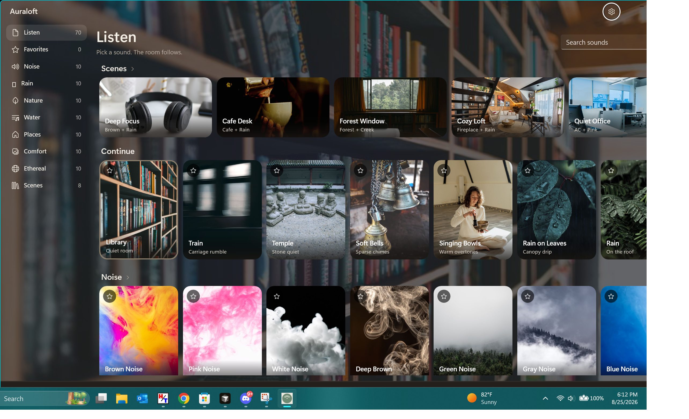

Calming sounds for focus, study, and sleep on Windows
Auraloft plays white noise, brown noise, rain, ocean, forest, cafe, and fireplace sounds — mix two at once, set a focus timer, and leave it running quietly in the system tray. No account. No ads.
Get it on the Microsoft Store
Everything you need to stay in the zone
A quiet, focused sound app — nothing to sign into, nothing to scroll.
Noise for focus
White, brown, pink, and green noise to mask distractions while you work or study.
Nature & rain
Rain on the roof, ocean waves, forest, creek, and more to help you relax.
Cozy backgrounds
Cafe chatter, a crackling fireplace, and warm room tones for reading and unwinding.
Mix two sounds
Layer a second sound — like brown noise under rain — and save it as a scene.
Focus timer
Set a session length and the sound fades out gently when time is up.
Lives in the tray
Plays in the background with a compact always-on-top mini player and media keys.
Dozens of sounds
Free includes brown noise, pink noise, rain, forest, ocean, cafe, fireplace, and singing bowls. Plus unlocks the full library.
Auraloft Plus
Unlock the full library, two-sound mixing, saved scenes, and the compact player.
Cancel anytime in Microsoft Store → Payments & subscriptions.
Questions
Is Auraloft free?
Yes. Eight sounds, the focus timer, and background/tray playback are free forever. Auraloft Plus unlocks the full library, mixing, scenes, and the compact player.
Does it work offline?
Yes. All sounds are built into the app, so it plays with no internet connection and no account.
Can I play two sounds at once?
Yes, with Plus you can mix a second layer — for example brown noise under rain — and save it as a scene.
Does it keep playing in the background?
Yes. Auraloft runs from the system tray with a compact always-on-top player and supports media keys.
What versions of Windows are supported?
Windows 10 and Windows 11.